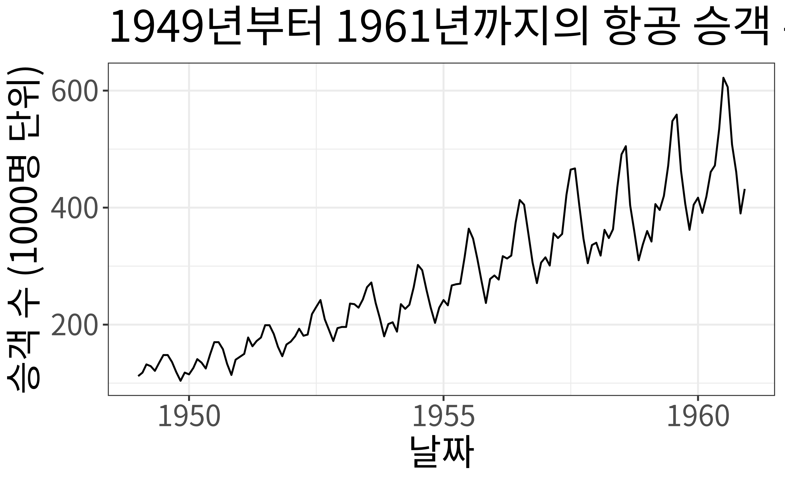
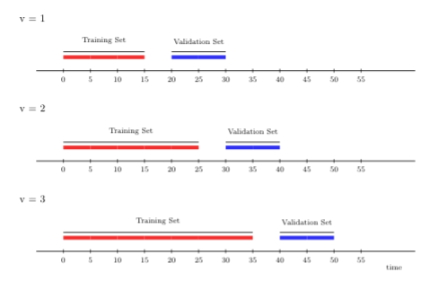
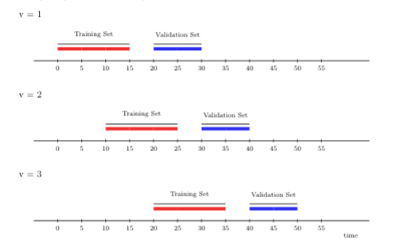
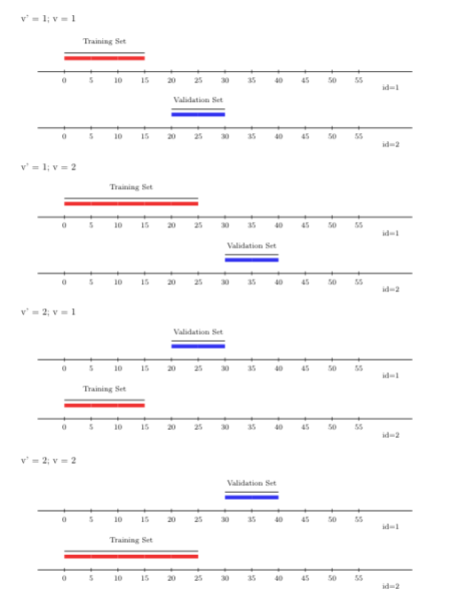

library(data.table)
library(origami)
library(knitr)
library(dplyr)
# 데이터셋 로드 및 살펴보기
washb_data <- fread(
paste0(
"https://raw.githubusercontent.com/tlverse/tlverse-data/master/",
"wash-benefits/washb_data.csv"
),
stringsAsFactors = TRUE
)6 교차 검증
Ivana Malenica
Jeremy Coyle, Nima Hejazi, Ivana Malenica, Rachael Phillips가 작성한 origami R 패키지를 바탕으로 합니다.
Note학습 목표
이 장을 마치면 여러분은 다음을 할 수 있게 됩니다.
훈련 세트(training set), 검증 세트(validation set), 테스트 세트(test set)를 구분합니다.
손실 함수(loss function), 리스크(risk) 및 교차 검증(cross-validation)의 개념을 이해합니다.
추정하고자 하는 함수 파라미터에 적합한 손실 함수를 선택합니다.
i.i.d. 데이터에 대한 서로 다른 교차 검증 체계를 이해하고 대조합니다.
시간 종속 데이터에 대한 서로 다른 교차 검증 체계를 이해하고 대조합니다.
적절한 폴드(fold) 구조를 설정하고, 사용자 정의 폴드 기반 함수를 구축하며,
origamiR패키지를 사용하여 제안된 함수를 교차 검증합니다.origamiR패키지를 사용하여 슈퍼 러너(Super Learner)가 사용할 적절한 교차 검증 구조를 설정합니다.
6.1 소개
타겟 러닝을 위한 로드맵에 따라, 본 장에서는 추정 단계에 대해 자세히 설명하기 시작합니다. 타겟 파라미터의 추정치를 생성하기 위해, 우리는 추정 절차의 성능 품질을 어떻게 평가할지 결정해야 합니다. 모든 알고리즘(추정기)의 성능 또는 오차는 동일한 데이터 생성 과정에서 발생하는 독립적인 데이터셋에 대한 일반화 가능성에 해당합니다. 알고리즘의 성능 평가는 매우 중요합니다 — 이는 알고리즘이 얼마나 잘 작동하는지에 대한 정량적 척도를 제공하며, 알고리즘 세트(또는 “라이브러리”) 중에서 선택하는 가이드 역할을 합니다. 알고리즘 또는 그 라이브러리의 성능을 평가하기 위해, 리스크 또는 예상 예측 오차를 정의하는 손실 함수의 개념을 도입합니다. 우리의 목표는 추정기의 참 성능(리스크)을 추정하는 것입니다. 다음 장에서는 가장 성능이 좋은 알고리즘을 선택하기 위해 알고리즘 라이브러리의 성능을 추정하는 방법에 대해 자세히 설명합니다. 다음에서는 관찰된 데이터와 origami 패키지 (Coyle and Hejazi 2018; Coyle et al., n.d.)에 구현된 교차 검증 절차를 사용하여 이를 수행하는 방법을 제안합니다.
6.2 배경
이상적으로, 데이터가 풍부한 시나리오(즉, 관찰값이 무제한인 경우)에서는 데이터셋을 다음 세 부분으로 나눕니다.
- 훈련 세트(training set),
- 검증 세트(validation set),
- 테스트(또는 홀드아웃) 세트(test or holdout set).
훈련 세트는 관심 있는 알고리즘을 적합(fit)시키는 데 사용됩니다. 검증 세트에서 적합의 성능을 평가하며, 이는 예측 오차를 추정하는 데(예: 알고리즘 튜닝 또는 선택을 위해) 사용될 수 있습니다. 선택된 알고리즘의 최종 오차는 최종 모델 평가 단계까지 알고리즘이 이러한 관찰값을 절대 접하지 않도록 완전히 분리되어 유지된 테스트(또는 홀드아웃) 세트를 사용하여 얻습니다. 훈련 데이터가 이미 준비되어 있는데, 제안된 알고리즘의 성능을 평가하는 데 훈련 오차를 사용하면 안 되는지 궁금할 수 있습니다. 불행하게도 훈련 오차는 적합된 알고리즘의 일반화 가능성에 대한 편향된 추정치입니다. 적합과 평가에 동일한 데이터를 사용하기 때문입니다.
데이터가 부족한 경우가 많으므로 데이터셋을 훈련, 검증, 테스트 세트로 나누는 것은 훈련에 사용할 수 있는 데이터를 너무 많이 감소시켜 너무 제한적일 수 있습니다. 대규모 데이터셋과 지정된 테스트 세트가 없는 경우, 효율적인 샘플 재사용을 통해 알고리즘의 참 성능을 추정하는 방법에 의존해야 합니다. 부트스트랩과 같은 재표본(Re-sampling) 방법은 훈련 세트에서 반복적으로 샘플링하고 이러한 샘플에 알고리즘을 적합시키는 과정을 포함합니다. 종종 계산 집약적이지만, 재표본 방법은 알고리즘을 평가하고 그중 하나를 선택하는 데 특히 유용합니다. 또한 알고리즘을 모든 훈련 데이터에 단 한 번만 적합시키는 것에 비해, 적합된 알고리즘의 가변성과 견고성에 대한 더 많은 통찰력을 제공합니다.
6.2.1 교차 검증 소개
이 장에서는 임의의 알고리즘이 데이터 샘플로부터 그것이 발생한 타겟 모집단으로 어떻게 확장되는지 평가하기 위한 필수 도구인 교차 검증에 집중합니다. 교차 검증은 현대 통계학의 모든 측면에서 널리 적용되어 왔으며, 아마도 통계적 기계 학습에서 가장 두드러지게 나타날 것입니다. 교차 검증 절차는 대표본에서, 즉 점근적으로 알고리즘 선택에 최적인 것으로 입증되었습니다. 특히 교차 검증된 알고리즘은 추정치가 예측 변수와 결과 변수의 결합 분포로부터 얻은 독립적인 표본에 적용될 때 참 리스크를 추정합니다.
모델 선택에 사용될 때 교차 검증은 강력한 최적성 속성을 갖습니다. 점근적 최적성 결과에 따르면 교차 검증 선택기는 참인 미지의 데이터 생성 분포에 자유롭게 접근할 수 있는 가상의 절차인 최적의 오라클(oracle) 선택기만큼 (리스크 측면에서) 점근적으로 잘 수행됩니다. 이론적 결과에 대한 자세한 내용은 van der Laan and Dudoit (2003), van der Laan, Dudoit, and Keles (2004), Dudoit and van der Laan (2005) 및 van der Vaart, Dudoit, and van der Laan (2006) 을 참조하십시오.
origami 패키지는 교차 검증을 위한 일련의 도구를 제공합니다. 다음에서는 origami에서 즉시 사용할 수 있는 다양한 유형의 교차 검증 체계를 설명하고, origami 패키지의 일반적인 구조를 소개하며, 다양한 응용 환경에서 이러한 절차의 사용을 시연합니다.
6.3 추정 로드맵: 모든 것이 어떻게 어우러지나요?
타겟 러닝을 위한 로드맵을 정의한 것과 비슷하게, 추정 과정을 위한 가이드로서 추정 로드맵을 정의할 수 있습니다. 특히 추정기 구축, 선택 및 성능 평가를 위해 교차 검증에 의존하는 통합된 손실 기반 추정 프레임워크 (van der Laan and Dudoit 2003; van der Laan, Dudoit, and Keles 2004; Dudoit and van der Laan 2005; van der Vaart, Dudoit, and van der Laan 2006; van der Laan, Polley, and Hubbard 2007)는 세 가지 주요 단계로 구성됩니다.
손실 함수: 원하는 성능 측도를 나타내도록 선택된 전체 데이터 손실 함수에 대해 예상 손실(리스크)의 최소화 장치로 타겟 파라미터를 정의합니다. 전체 데이터란 예를 들어 누락 과정을 포함한 완전한 데이터를 의미합니다. 전체 데이터 손실 함수를 동일한 기댓값을 가지며 리스크 추정기로 이어지는 관찰 데이터 손실 함수로 매핑합니다.
알고리즘: 관심 파라미터에 대한 후보 추정기들의 유한한 모음을 구축합니다.
교차 검증 체계: 적절한 교차 검증을 적용하고, 후보들 중에서 가장 성능이 좋은 추정기를 선택하기 위해 교차 검증된 리스크를 사용합니다. 결과로 나오는 추정기의 전반적인 성능을 평가합니다.
6.4 예: 교차 검증과 예측
추정 로드맵을 소개했으므로 예측을 예로 들어 우리의 목표를 더 정밀하게 정의할 수 있습니다. 관찰된 데이터를 \(O = (W, Y)\)로 정의하며, 여기서 단위별 데이터 구조는 \(i = 1, \ldots, n\)에 대해 \(O_i = (W_i, Y_i)\)로 쓸 수 있습니다. \(Y_i\)를 관심 결과/종속 변수로, \(W_i\)를 \(p\)차원의 공변량(예측 변수) 세트로 표시합니다. 우리는 \(n\)개의 단위가 독립적이거나 조건부 독립적이며 동일하게 분포되어 있다고 가정합니다. \(\psi_0(W)\)를 관심 있는 타겟 파라미터, 즉 우리가 추정하고자 하는 양(피추정치)이라고 합시다. 이 예에서 우리는 공변량이 주어졌을 때 결과의 조건부 기댓값 \(\psi_0(W) = \E(Y \mid W)\)을 추정하는 데 관심이 있습니다. 추정 로드맵에 따라 \(\psi_0(W) = \text{argmin}_{\psi} \E_0[L(O, \psi(W))]\)가 되도록 적절한 손실 함수 \(L\)을 선택합니다. 참 타겟 파라미터 \(\psi_0(W)\)는 리스크(선택된 손실 함수의 기댓값)의 최소화 장치임을 유의하십시오. 연속형 결과 변수를 갖는 조건부 기댓값에 적절한 손실 함수는 예를 들어 평균 제곱 오차(MSE)일 수 있습니다. 그러면 \(L\)을 \(L(O, \psi(W)) = (Y_i -\psi(W_i))^2\)로 정의할 수 있습니다. 피추정치를 추정하는 다양한 알고리즘(다양한 \(\psi\)들)이 있을 수 있음에 유의하십시오. \(\psi_0(W)\)의 각 후보 추정기가 얼마나 잘 수행되고 있는지 어떻게 알 수 있을까요? 가장 성능이 좋은 후보 추정기를 고르고 그 전반적인 성능을 평가하기 위해 교차 검증을 사용합니다. 훈련 세트의 관찰값은 추정기를 적합(또는 훈련)시키는 데 사용되고, 검증 세트의 관찰값은 리스크를 평가(또는 검증)하는 데 사용됩니다.
다음으로, 모든 교차 검증 체계를 표현할 수 있을 만큼 유연한 표기법을 도입합니다. 특히 분할 벡터(split vector) \(B_n = (B_n(i): i = 1, \ldots, n) \in \{0,1\}^n\)를 정의합니다. \(B_n\)의 실현은 데이터를 다음과 같이 훈련 및 검증 하위 집합으로 무작위 분할하는 것을 정의합니다. \[B_n(i) = 0, \ \ \text{i번째 샘플이 훈련 세트에 있음}\] \[B_n(i) = 1, \ \ \text{i번째 샘플이 검증 세트에 있음.}\] 우리는 \(P_{n, B_n}^0\)과 \(P_{n, B_n}^1\)을 각각 훈련 세트와 검증 세트의 경험적 분포로 정의할 수 있습니다. 그러면 \(n_0 = \sum_i (1 - B_n(i))\)과 \(n_1 = \sum_i B_n(i)\)은 각각 훈련 세트와 검증 세트의 샘플 수를 나타냅니다. 분할 벡터 \(B_n\)의 특정한 분포가 당면한 문제와 데이터셋에 맞춤화된 교차 검증 체계의 유형을 정의합니다.
6.5 origami의 교차 검증 체계
데이터 크기, 결과 변수의 보급률(prevalence), 의존성 구조(단위 간 또는 시간 경과에 따른)를 포함하여 관심 문제의 두드러진 세부 사항에 맞춰진 다양한 파티셔닝 체계가 존재합니다. 다음에서는 origami 패키지에서 사용할 수 있는 다양한 교차 검증 체계를 설명하고, 실제 데이터 분석 예제에서 그 사용법을 시연합니다.
6.5.1 WASH Benefits 연구 예제
다양한 교차 검증 체계를 설명하기 위해 WASH Benefits 예제 데이터셋을 사용합니다(자세한 정보는 3장에서 찾을 수 있습니다). 특히 가용한 공변량 데이터를 사용하여 연령 대비 체중 Z-점수(whz)를 예측하는 데 관심이 있습니다. 이 예시를 위해 데이터를 미지의 분포 \(P_0\)로부터 얻은 독립적이고 동일하게 분포된(i.i.d.) 무작위 추출물로 취급하는 것부터 시작하겠습니다. 각 교차 검증 체계가 무엇을 하는지 확인하기 위해 데이터를 \(n=30\)으로만 하위 집합화합니다. 각 행은 행 번호로 인덱싱된 i.i.d. 샘플링된 단위를 나타냅니다.
| whz | tr | fracode | month | aged | sex | momage | momedu | momheight | hfiacat | Nlt18 | Ncomp | watmin | elec | floor | walls | roof | asset_wardrobe | asset_table | asset_chair | asset_khat | asset_chouki | asset_tv | asset_refrig | asset_bike | asset_moto | asset_sewmach | asset_mobile |
|---|---|---|---|---|---|---|---|---|---|---|---|---|---|---|---|---|---|---|---|---|---|---|---|---|---|---|---|
| 0.00 | Control | N05265 | 9 | 268 | male | 30 | Primary (1-5y) | 146.4 | Food Secure | 3 | 11 | 0 | 1 | 0 | 1 | 1 | 0 | 1 | 1 | 1 | 0 | 1 | 0 | 0 | 0 | 0 | 1 |
| -1.16 | Control | N05265 | 9 | 286 | male | 25 | Primary (1-5y) | 148.8 | Moderately Food Insecure | 2 | 4 | 0 | 1 | 0 | 1 | 1 | 0 | 1 | 0 | 1 | 1 | 0 | 0 | 0 | 0 | 0 | 1 |
| -1.05 | Control | N08002 | 9 | 264 | male | 25 | Primary (1-5y) | 152.2 | Food Secure | 1 | 10 | 0 | 0 | 0 | 1 | 1 | 0 | 0 | 1 | 0 | 1 | 0 | 0 | 0 | 0 | 0 | 1 |
| -1.26 | Control | N08002 | 9 | 252 | female | 28 | Primary (1-5y) | 140.2 | Food Secure | 3 | 5 | 0 | 1 | 0 | 1 | 1 | 1 | 1 | 1 | 1 | 0 | 0 | 0 | 1 | 0 | 0 | 1 |
| -0.59 | Control | N06531 | 9 | 336 | female | 19 | Secondary (>5y) | 150.9 | Food Secure | 2 | 7 | 0 | 1 | 0 | 1 | 1 | 1 | 1 | 1 | 1 | 1 | 0 | 0 | 0 | 0 | 0 | 1 |
| -0.51 | Control | N06531 | 9 | 304 | male | 20 | Secondary (>5y) | 154.2 | Severely Food Insecure | 0 | 3 | 1 | 1 | 0 | 1 | 1 | 0 | 0 | 0 | 0 | 1 | 0 | 0 | 0 | 0 | 0 | 1 |
위는 데이터의 처음 30개를 본 모습입니다.
6.5.2 i.i.d. 데이터를 위한 교차 검증
6.5.2.1 재대입 (Re-substitution)
재대입 방법은 적합된 알고리즘의 리스크를 추정하는 가장 간단한 전략일 것입니다. 이 교차 검증 체계에서는 관찰된 모든 데이터 단위가 훈련 세트와 검증 세트 모두에 사용됩니다.
아래에서 folds_resubstitution 함수를 사용하여 origami로 재대입 방법을 사용하는 법을 보여줍니다. folds_resubstitution을 설정하려면 훈련 세트와 검증 세트에 할당하려는 총 샘플 단위 수만 지정하면 됩니다. 데이터셋의 각 행은 고유한 i.i.d. 샘플링된 단위임을 기억하십시오. 또한 origami 출력 구조를 확인하십시오.
- v: 교차 검증 폴드
- training_set: 훈련 세트에 있는 샘플의 인덱스
- validation_set: 검증 세트에 있는 샘플의 인덱스 (여기서는 훈련 세트와 동일)
폴드의 list인 origami 출력 구조는 이 장에서 제시된 모든 교차 검증 체계에 걸쳐 유지됩니다. 아래에 재대입 방법으로 생성된 폴드를 보여줍니다.
folds <- folds_resubstitution(nrow(washb_data))
folds
[[1]]
$v
[1] 1
$training_set
[1] 1 2 3 4 5 6 7 8 9 10 11 12 13 14 15 16 17 18 19 20 21 22 23 24 25
[26] 26 27 28 29 30
$validation_set
[1] 1 2 3 4 5 6 7 8 9 10 11 12 13 14 15 16 17 18 19 20 21 22 23 24 25
[26] 26 27 28 29 30
attr(,"class")
[1] "fold"6.5.2.2 홀드아웃 (Holdout)
홀드아웃 방법 또는 검증 세트 접근 방식은 가용한 데이터를 훈련 세트와 검증(홀드아웃) 세트로 무작위로 나누는 것으로 구성됩니다. 그런 다음 훈련 세트의 관찰값을 사용하여 모델을 적합(즉, “훈련”)시키고, 이어서 검증 세트의 관찰값을 사용하여 평가(즉, “검증”)합니다. 일반적으로 데이터셋은 \(60:40, 70:30, 80:20\) 또는 심지어 \(90:10\)의 훈련 대 검증 비율로 나뉩니다.
홀드아웃 방법은 직관적이고 계산 비용이 적게 듭니다. 하지만 한 가지 단점이 있습니다. 데이터를 훈련 세트와 검증 세트로 무작위로 나누는 과정을 반복하면 경험적 리스크에 대해 매우 다른 교차 검증 추정치를 얻을 수 있습니다. 특히 검증 세트에서 평가된 손실 함수의 경험적 평균(즉, 경험적 리스크)은 훈련 및 검증 분할에 어떤 샘플이 포함되었는지에 따라 변동성이 매우 클 수 있습니다. 전반적으로 홀드아웃 방법의 교차 검증된 경험적 리스크는 무작위 분할의 가변성도 포함하기 때문에 더 가변적입니다 — 이는 바람직하지 않습니다. 분류 문제(이분형 또는 범주형 결과 변수가 있는 경우)에는 추가적인 단점이 있습니다. 훈련 세트와 검증 세트가 두 개(또는 그 이상)의 결과 클래스에 대해 불균등한 분포를 갖게 되어 훈련은 잘 되지만 검증은 제대로 되지 않거나 그 반대의 경우가 발생할 수 있습니다. 다만 이는 교차 검증 과정에 층화(stratification)를 통합함으로써 수정될 수 있습니다. 마지막으로, 제안된 알고리즘의 성능을 훈련하거나 평가할 때 모든 데이터를 사용하지 않는다는 점에 유의하십시오. 이 자체가 편향을 유발할 수 있습니다.
6.5.2.3 하나 빼기 (Leave-one-out)
하나 빼기 교차 검증 체계는 데이터셋을 훈련 세트와 검증 세트로 나눈다는 점에서 홀드아웃 방법과 밀접하게 관련되어 있지만, 데이터셋을 비슷한 크기의 세트로 나누는 대신 단일 관찰값을 검증 세트로 사용합니다. 그렇게 함으로써 샘플 단위의 대다수가 후보 학습 알고리즘을 적합(또는 훈련)시키는 데 사용됩니다. 단 하나의 샘플 단위(예를 들어 \(O_1 = (W_1, Y_1)\))만 적합 과정에서 제외되므로, 하나 빼기 교차 검증은 리스크에 대해 덜 편향된 추정치를 낼 수 있습니다. 일반적으로 하나 빼기 접근 방식은 홀드아웃 방법만큼 리스크를 과대평가하지 않습니다. 반면에 리스크 추정치가 단일 샘플 단위에 기반하므로 일반적으로 변동성이 매우 큰 추정치입니다.
모든 샘플 단위가 검증 세트 역할을 할 기회를 가질 때까지 데이터셋을 훈련 세트와 검증 세트로 나누는 과정을 반복할 수 있습니다. 위의 예시를 계속해서, 하나 빼기 교차 검증 체계의 후속 반복에서는 \(O_2 = (W_2, Y_2)\)를 검증 세트로 사용할 수 있으며(이전에는 \(O_1 = (W_1, Y_1)\)이 그 역할을 했음), 나머지 \(n-1\)개의 샘플 단위는 훈련 세트에 포함됩니다. 이 접근 방식을 \(n\)번 반복하면 \(n\)개의 리스크 추정치, 예를 들어 \(MSE_1, MSE_2, \ldots, MSE_n\)이 생성됩니다(단위 \(i\)가 검증 세트일 때의 평균 제곱 오차(MSE) 추정치임에 유의하십시오). 참 리스크의 추정치는 \(n\)개의 하나 빼기 리스크 추정치에 대한 평균입니다. 하나 빼기 교차 검증 체계는 홀드아웃 방법보다 덜 편향된(비록 가변적이지만) 리스크 추정치를 내놓지만, \(n\)이 클 때는 구현하기에 계산 비용이 매우 많이 들 수 있습니다.
아래에서 folds_loo(n) 함수를 사용하여 origami로 하나 빼기 교차 검증 체계의 사용법을 보여줍니다. folds_loo(n)를 설정하려면 재대입 방법의 경우와 비슷하게 교차 검증 절차가 작동할 총 샘플 단위 수만 있으면 됩니다. 아래에 하나 빼기 교차 검증으로 생성된 처음 두 개의 폴드를 보여줍니다.
folds <- folds_loo(nrow(washb_data))
folds[[1]]
$v
[1] 1
$training_set
[1] 2 3 4 5 6 7 8 9 10 11 12 13 14 15 16 17 18 19 20 21 22 23 24 25 26
[26] 27 28 29 30
$validation_set
[1] 1
attr(,"class")
[1] "fold"
folds[[2]]
$v
[1] 2
$training_set
[1] 1 3 4 5 6 7 8 9 10 11 12 13 14 15 16 17 18 19 20 21 22 23 24 25 26
[26] 27 28 29 30
$validation_set
[1] 2
attr(,"class")
[1] "fold"6.5.2.4 \(V\)-폴드 (\(V\)-fold)
하나 빼기 체계의 대안은 \(V\)-폴드 교차 검증입니다. 이 교차 검증 체계는 데이터셋을 동일한(또는 거의 동일한) 크기의 \(V\)개 분할로 무작위로 나눕니다. 각 분할 \(v=1,\ldots,V\)에 대해, \(v\)번째 폴드는 \(v\)번째 분할(폴드 \(v\)에 대한 검증 세트를 정의함)과 \(v\)번째 분할의 여집합(폴드 \(v\)에 대한 훈련 세트를 정의함)으로 정의됩니다. 알고리즘은 \(V\)개의 각 훈련 세트에 대해 별도로 \(V\)번 적합됩니다. 각 폴드의 적합된 알고리즘의 리스크는 검증 세트에서 얻은 예측을 통해 평가됩니다. 적합된 알고리즘에 대한 교차 검증된 리스크(예: MSE)는 모든 폴드에 대한 평균 리스크입니다. \(V\)-폴드 교차 검증을 사용하면 훈련 및 검증 단계에서 모든 관찰값이 사용되므로 후보 학습 알고리즘이 데이터의 하위 집합(예: 특정 훈련 세트)에만 과적합되는 것을 방지할 수 있습니다.
\(n\)개의 샘플 단위가 있는 데이터셋에서 \(v=n\)인 \(V\)-폴드 교차 검증은 단순히 하나 빼기로 축소됩니다. 마찬가지로 \(n=1\)로 설정하면 후보 학습 알고리즘의 성능에 대한 홀드아웃 방법의 추정치를 얻을 수 있습니다. 계산상의 이점 외에도 \(V\)-폴드 교차 검증은 종종 기저의 참 리스크에 대해 더 정확한 추정치를 제공합니다. 이는 이 두 교차 검증 체계와 관련된 서로 다른 편향-분산 트레이드오프(bias-variance trade-offs)에 기인합니다. 하나 빼기 체계는 편향이 적을 수 있지만, 분산이 훨씬 큽니다(검증 세트에 단 하나의 단위만 포함되기 때문). 이 차이는 \(n\)이 \(v\)보다 훨씬 커질수록 더 분명해집니다. \(V\)-폴드 교차 검증 체계를 사용하면 \(v\)개의 검증 폴드에 대해 리스크 추정치를 평균 내게 되는데, 이들은 일반적으로 하나 빼기 적합에서 얻은 리스크 추정치보다 상관관계가 적습니다. 상관관계가 높은 많은 수량의 평균은 더 높은 분산을 갖는다는 사실 때문에, 하나 빼기 리스크 추정치는 \(V\)-폴드 교차 검증 기반의 해당 추정치보다 더 높은 분산을 갖게 됩니다.
이제 origami를 사용한 \(V\)-폴드 교차 검증이 실제로 작동하는 모습을 봅시다! 다음 장에서는 대규모 후보 학습 알고리즘 라이브러리 중에서 “최고의” 알고리즘을 선택할 수 있는 알고리즘인 슈퍼 러너 알고리즘을 공부할 것이며, 우리는 그 성능을 적합시키고 평가하고자 합니다. 슈퍼 러너 알고리즘은 기본 교차 검증 체계로 \(V\)-폴드 교차 검증에 의존합니다. \(V\)-폴드 교차 검증을 설정하려면 origami의 folds_vfold(n, V) 함수를 호출해야 합니다. folds_vfold(n, V)에 필요한 두 개의 인자는 교차 검증될 총 샘플 단위 수와 원하는 폴드 수입니다.
예를 들어 \(V=2\)이면 각각 훈련 및 검증 세트에 약 \(n/2\)개의 샘플 단위를 가진 두 개의 폴드를 얻게 됩니다.
folds <- folds_vfold(nrow(washb_data), V = 2)
folds[[1]]
$v
[1] 1
$training_set
[1] 2 3 4 6 7 8 11 12 14 15 19 22 23 24 28
$validation_set
[1] 1 5 9 10 13 16 17 18 20 21 25 26 27 29 30
attr(,"class")
[1] "fold"
folds[[2]]
$v
[1] 2
$training_set
[1] 1 5 9 10 13 16 17 18 20 21 25 26 27 29 30
$validation_set
[1] 2 3 4 6 7 8 11 12 14 15 19 22 23 24 28
attr(,"class")
[1] "fold"6.5.2.5 몬테카를로 (Monte Carlo)
몬테카를로 교차 검증 체계에서는 데이터의 일부를 _비복원 추출_로 무작위 선택하여 훈련 세트를 형성하고, 나머지 샘플 단위를 검증 세트에 할당합니다. 이런 방식으로 데이터셋은 두 개의 독립적인 분할로 무작위 분할됩니다. \(n_0 = n \cdot (1 - p)\)개의 관찰값으로 구성된 훈련 세트와 \(n_1 = n \cdot p\)개의 관찰값으로 구성된 검증 세트입니다. 이 절차를 여러 번 반복함으로써 몬테카를로 교차 검증 체계는 데이터셋의 많은 훈련 및 검증 파티션을 무작위로 생성합니다.
파티션이 폴드 간에 독립적이므로 동일한 관찰 단위가 검증 세트에 여러 번 나타날 수 있습니다. 이는 몬테카를로와 \(V\)-폴드 교차 검증 체계 사이의 극명한 차이점임에 유의하십시오. 주어진 샘플링 비율 \(p\)에 대해 몬테카를로 교차 검증 체계는 무한히 반복된다면 최적일 것입니다 — 물론 이는 계산상 불가능합니다. 몬테카를로 교차 검증을 사용하면 \(V\)-폴드 교차 검증보다 데이터셋의 훨씬 더 많은 파티션을 탐색할 수 있으며, 그 결과 리스크에 대해 (파티션 간에) 가변성이 덜한 추정치를 얻을 수 있습니다(물론 이는 분할이 상관되어 있기 때문에 편향이 증가하는 대가를 치릅니다). 몬테카를로 교차 검증은 샘플 단위가 중복되는 많은 분할을 생성하기 때문에, \(V\)-폴드 교차 검증 체계가 단 \(V\)개의 분할로 달성하는 수준의 성능(비편향성 측면에서)을 달성하려면 더 많은 분할(따라서 더 많은 계산 시간)이 필요할 것입니다.
아래에서 folds_montecarlo(n, V, pvalidation) 함수를 사용하여 origami로 몬테카를로 교차 검증 체계의 사용법을 보여줍니다. folds_montecarlo(n, V, pvalidation)를 설정하려면 다음이 필요합니다.
- 교차 검증하고자 하는 총 관찰값 수
- 폴드 수
- 검증 세트에 배치할 관찰값의 비율
예를 들어 \(V=2\) 및 \(pvalidation = 0.2\)로 설정하면 각 폴드에 대해 검증 세트에 약 6개의 샘플 단위를 가진 두 개의 폴드를 얻습니다.
folds <- folds_montecarlo(nrow(washb_data), V = 2, pvalidation = 0.2)
folds[[1]]
$v
[1] 1
$training_set
[1] 19 27 16 29 23 12 1 3 18 11 5 7 8 6 9 22 10 25 20 28 15 2 24 26
$validation_set
[1] 4 13 14 17 21 30
attr(,"class")
[1] "fold"
folds[[2]]
$v
[1] 2
$training_set
[1] 19 15 28 25 29 11 20 17 14 4 9 12 30 8 27 18 16 10 13 6 24 3 26 1
$validation_set
[1] 2 5 7 21 22 23
attr(,"class")
[1] "fold"6.5.2.6 부트스트랩 (Bootstrap)
몬테카를로 교차 검증 체계와 마찬가지로 부트스트랩 교차 검증 체계도 훈련 세트를 위해 샘플 단위를 _복원 추출_로 무작위 선택하며, 나머지 샘플 단위는 검증 세트에 할당됩니다. 그런 다음 이 과정을 여러 번 반복하여 매번 데이터셋의 새로운 훈련 및 검증 파티션을 (무작위로) 생성합니다. 몬테카를로 교차 검증 체계와 달리 폴드 간에 훈련 및 검증 세트의 총 샘플 단위 수(즉, 두 파티션의 크기)가 일정하게 유지되지 않습니다. 또한 이름에서 알 수 있듯이 추출은 복원 추출(부트스트랩 (Davison and Hinkley 1997)에서와 같이)로 수행되므로 정확히 동일한 관찰 단위가 여러 훈련 세트에 포함될 수 있습니다. 검증 세트 내 관찰 단위의 비율은 무작위 변수이며, 기댓값은 약 \(0.368\)입니다.
아래에서 folds_bootstrap(n, V) 함수를 사용하여 origami로 부트스트랩 교차 검증 체계의 사용법을 보여줍니다. folds_bootstrap(n, V)를 설정하려면 다음 인자를 지정해야 합니다.
- 교차 검증하고자 하는 총 관찰값 수
- 폴드 수
예를 들어 \(V=2\)로 설정하면 폴드 간에 검증 세트의 샘플 단위 수가 서로 다른 두 개의 폴드를 얻습니다.
folds <- folds_bootstrap(nrow(washb_data), V = 2)
folds[[1]]
$v
[1] 1
$training_set
[1] 2 5 30 1 29 16 10 11 8 25 28 2 11 2 16 28 15 28 1 27 9 19 20 30 18
[26] 11 13 2 18 12
$validation_set
[1] 3 4 6 7 14 17 21 22 23 24 26
attr(,"class")
[1] "fold"
folds[[2]]
$v
[1] 2
$training_set
[1] 12 16 10 29 22 15 27 9 27 16 12 28 10 28 26 1 14 6 23 14 21 16 5 20 8
[26] 23 25 8 27 5
$validation_set
[1] 2 3 4 7 11 13 17 18 19 24 30
attr(,"class")
[1] "fold"6.5.3 시계열 데이터를 위한 교차 검증
origami 패키지는 임의의 시간 및 네트워크 종속성을 갖는 단일 및 다중 시계열 모두에 대해 시계열 데이터를 위한 수많은 교차 검증 체계도 지원합니다.
6.5.4 AirPassenger 데이터 예제
시계열을 위한 다양한 교차 검증 체계를 설명하기 위해 널리 사용되고 무료로 제공되는 데이터셋인 AirPassenger 데이터를 사용하겠습니다. R에 포함된 AirPassenger 데이터셋은 1949년부터 1960년 사이의 국제선 항공기 승객의 월별 총계를 제공합니다.
목표: 1949년부터 1960년까지의 과거 데이터를 사용하여 시점 \(h\) 이후의 항공기 승객 수를 예측하고자 합니다.
library(ggfortify)
data(AirPassengers)
AP <- AirPassengers
autoplot(AP) +
labs(
x = "날짜",
y = "승객 수 (1000명 단위)",
title = "1949년부터 1961년까지의 항공 승객 수"
)
t <- length(AP)
6.5.4.1 롤링 오리진 (Rolling origin)
롤링 오리진 교차 검증 체계는 대규모 데이터 스트림을 지속적으로(시간을 준수하며) 적합시켜야 하는 “온라인” 학습 알고리즘에 적합하며, 데이터가 더 쌓임에 따라 학습 알고리즘의 적합이 (끊임없이) 업데이트됩니다. 일반적으로 롤링 오리진 체계는 초기 훈련 세트를 정의하며, 각 반복마다 훈련 세트의 크기가 \(m\)개의 관찰값 배치만큼 커지고, 검증 세트의 크기는 일정하게 유지되며, 훈련 시간과 검증 시간 사이에 크기 \(h\)의 간격(지연 창, lag window)이 있을 수 있으며, 검증 세트에서 시점 \(t\)에 도달할 때까지 새로운 폴드가 추가됩니다. 훈련 세트에 포함된 시점은 항상 검증 세트의 시점보다 뒤쳐집니다.
롤링 오리진 교차 검증을 더 자세히 설명하기 위해 아래에 세 개의 폴드를 생성하는 예시를 보여줍니다. 여기서 첫 번째 창 크기는 15개 시점이며, 여기서 먼저 후보 학습 알고리즘을 훈련시킵니다. 그런 다음 훈련 세트와 검증 세트 사이에 5개 시점의 간격(\(h\))을 두고 10개 시점에 대해 성능을 평가합니다.
다음으로, 처음에 시작했던 원래의 15개를 포함하여 더 긴 데이터 스트림인 25개 시점에서 학습 알고리즘을 훈련시킵니다. 그런 다음 (시간적) 거리로 10개 시점 앞선 위치에서 성능을 평가합니다.

아래에서 folds_rolling_origin(n, first_window, validation_size, gap, batch) 함수를 사용하여 origami로 롤링 오리진 교차 검증 체계의 사용법을 보여줍니다. folds_rolling_origin(n, first_window, validation_size, gap, batch)을 설정하려면 다음이 필요합니다.
- 교차 검증하고자 하는 총 시점 수 (
n) - 첫 번째 훈련 세트의 크기 (
first_window) - 검증 세트의 크기 (
validation_size) - 훈련 세트와 검증 세트 사이의 간격 (
gap) - 교차 검증 반복당 훈련 세트 업데이트 크기 (
batch)
우리의 시계열은 \(t=144\)개 시점을 가집니다. first_window를 \(50\), validation_size를 10, gap을 5, batch를 20으로 설정하면 4개의 시계열 폴드가 생성됩니다. 아래에 처음 두 개를 보여줍니다.
folds <- folds_rolling_origin(
n = t,
first_window = 50, validation_size = 10, gap = 5, batch = 20
)
folds[[1]]
$v
[1] 1
$training_set
[1] 1 2 3 4 5 6 7 8 9 10 11 12 13 14 15 16 17 18 19 20 21 22 23 24 25
[26] 26 27 28 29 30 31 32 33 34 35 36 37 38 39 40 41 42 43 44 45 46 47 48 49 50
$validation_set
[1] 56 57 58 59 60 61 62 63 64 65
attr(,"class")
[1] "fold"
folds[[2]]
$v
[1] 2
$training_set
[1] 1 2 3 4 5 6 7 8 9 10 11 12 13 14 15 16 17 18 19 20 21 22 23 24 25
[26] 26 27 28 29 30 31 32 33 34 35 36 37 38 39 40 41 42 43 44 45 46 47 48 49 50
[51] 51 52 53 54 55 56 57 58 59 60 61 62 63 64 65 66 67 68 69 70
$validation_set
[1] 76 77 78 79 80 81 82 83 84 85
attr(,"class")
[1] "fold"6.5.4.2 롤링 윈도우 (Rolling window)
교차 검증의 각 반복에서 훈련 세트에 점점 더 많은 시점을 추가하는 대신(롤링 오리진 체계에서와 같이), 롤링 윈도우 교차 검증 체계는 훈련 샘플을 시간상 \(m\) 단위(시간 단위)만큼 앞으로 “굴립니다(rolls)”. 이 전략은 예를 들어 모멘트(예: 평균, 분산) 또는 파라미터 드리프트(drift)에 매우 민감한 모수적 학습 알고리즘이 있는 환경에서 유용할 수 있으며, 드리프트 자체는 모델 구축 단계에서 명시적으로 설명하기 어렵습니다. 롤링 윈도우 체계는 또한 계산적으로 더 효율적이며, 훈련 데이터가 너무 커서 편리하게 접근할 수 없는 스트리밍 데이터 분석에서 작업할 때 롤링 오리진보다 정당화될 수 있습니다. 롤링 오리진 체계와 달리 롤링 윈도우 체계의 각 반복에서 훈련 세트의 샘플 단위 수는 항상 동일합니다.
아래 그림은 세 개의 시계열 폴드를 사용한 롤링 윈도우 교차 검증을 묘사합니다. 첫 번째 창 크기는 15개 시점이며, 여기서 먼저 후보 학습 알고리즘을 훈련시킵니다. 이전 그림에서와 같이 훈련 세트와 검증 세트 사이에 크기 5개 시점의 간격을 두고 10개 시점에서 성능을 평가합니다. 그러나 다음 폴드에서는 오리진(기점)에서 더 멀어진 시점(여기서는 10개 시점)에서 학습 알고리즘을 훈련시킵니다. 새로운 폴드에서의 훈련 세트 크기는 첫 번째 폴드와 동일함(둘 다 15개 시점 포함)에 유의하십시오. 이 설정은 롤링 오리진 교차 검증 체계와 달리 시간이 지남에 따라(그리고 폴드 전체에 걸쳐) 훈련 세트를 비교 가능하게 유지합니다. 그런 다음 미래의 10개 시점에서 후보 학습 알고리즘의 성능을 평가합니다.

아래에서 folds_rolling_window(n, window_size, validation_size, gap, batch) 함수를 사용하여 origami로 롤링 윈도우 교차 검증 체계의 사용법을 시연합니다. folds_rolling_window(n, window_size, validation_size, gap, batch)를 설정하려면 다음 인자를 지정해야 합니다.
- 교차 검증하고자 하는 총 시점 수 (
n) - 훈련 세트의 크기 (
window_size) - 검증 세트의 크기 (
validation_size) - 훈련 세트와 검증 세트 사이의 간격 (
gap) - 교차 검증 반복당 훈련 세트 업데이트 크기 (
batch)
window_size를 \(50\), validation_size를 10, gap을 5, batch를 20으로 설정하면 마찬가지로 4개의 시계열 폴드를 얻습니다. 아래에 처음 두 개를 보여줍니다.
folds <- folds_rolling_window(
n = t,
window_size = 50, validation_size = 10, gap = 5, batch = 20
)
folds[[1]]
$v
[1] 1
$training_set
[1] 1 2 3 4 5 6 7 8 9 10 11 12 13 14 15 16 17 18 19 20 21 22 23 24 25
[26] 26 27 28 29 30 31 32 33 34 35 36 37 38 39 40 41 42 43 44 45 46 47 48 49 50
$validation_set
[1] 56 57 58 59 60 61 62 63 64 65
attr(,"class")
[1] "fold"
folds[[2]]
$v
[1] 2
$training_set
[1] 21 22 23 24 25 26 27 28 29 30 31 32 33 34 35 36 37 38 39 40 41 42 43 44 45
[26] 46 47 48 49 50 51 52 53 54 55 56 57 58 59 60 61 62 63 64 65 66 67 68 69 70
$validation_set
[1] 76 77 78 79 80 81 82 83 84 85
attr(,"class")
[1] "fold"6.5.4.3 \(V\)-폴드가 결합된 롤링 오리진
샘플 의존성을 고려한 롤링 오리진 교차 검증 체계의 변형은 롤링 오리진-\(V\)-폴드(rolling-origin-\(V\)-fold) 교차 검증 체계입니다. 정통 롤링 오리진 체계와 달리, 이 하이브리드 체계 하에서는 훈련 세트와 검증 세트의 샘플 단위가 동일하지 않으며, 이 체계는 시계열 설정 내에 \(V\)-폴드 교차 검증을 통합함으로써 이를 달성합니다. 여기서 학습 알고리즘의 예측은 훈련 단계에서 제외된 시계열 관찰 단위의 미래 시점에서 평가되어, 시간 경과에 따른 의존성뿐만 아니라 관찰 단위 간의 잠재적 의존성도 수용합니다. origami와 함께 롤링 오리진-\(V\)-폴드 교차 검증 체계를 사용하려면 folds_vfold_rolling_origin_pooled(n, t, id, time, V, first_window, validation_size, gap, batch) 함수를 호출하면 됩니다. 아래 그림에서는 두 개의 시계열(롤링 오리진) 교차 검증 폴드와 함께 \(V=2\) 폴드를 보여줍니다.

6.5.4.4 \(V\)-폴드가 결합된 롤링 윈도우
위에서 설명한 체계와 마찬가지로 롤링 윈도우 방식도 롤링 오리진 방식과 마찬가지로 \(V\)-폴드 분할 구성 요소를 통합함으로써 임의의 샘플 수준 의존성을 갖는 다중 시계열을 지원하도록 확장될 수 있습니다. 이 롤링 윈도우-\(V\)-폴드 교차 검증 체계는 origami에서 folds_vfold_rolling_window_pooled(n, t, id, time, V, window_size, validation_size, gap, batch) 함수를 통해 사용될 수 있습니다. 아래 그림은 \(V=2\) 폴드와 두 개의 시계열(롤링 윈도우) 교차 검증 폴드를 보여줍니다.

6.6 origami의 일반적인 워크플로
더 자세한 내용을 살펴보기 전에 origami R 패키지의 몇 가지 기본 기능을 검토해 보겠습니다. origami에서 주로 사용되는 함수는 cross_validate()입니다. 우선 사용자는 폴드 구조와 각 폴드에서 작동하는 함수를 정의해야 합니다(이 cv_fun()은 origami 용어로 대개 후보 학습 알고리즘이 어떻게 훈련되고 그 예측이 어떻게 검증되는지를 규정합니다).
cross_validate()에 전달되면, 이 핵심 함수는 지정된 함수(즉, cv_fun())를 각 폴드에 반복적으로 적용하여 폴드별 결과를 의미 있는 방식으로 결합합니다. 나중에 실제 작동 모습을 보게 될 것입니다 — 지금은 아래에서 이 프로세스의 각 단계에 대한 구체적인 세부 사항을 제공합니다.
6.6.1 (1) 폴드 정의
cross_validate에 전달되는 folds 객체는 폴드들의 list입니다. 이러한 list 객체는 make_folds() 도우미 함수를 사용하여 생성됩니다. 각 폴드는 "training" 인덱스 벡터, "validation" 인덱스 벡터 및 "fold_index"(전체 폴드 list에서의 순서)가 포함된 list로 구성됩니다. make_folds() 함수는 이전 섹션에서 설명한 다양한 교차 검증 체계를 지원합니다. make_folds() 함수는 또한 (strata_ids 인자를 통해) 특정 변수의 수준 간 균형을 보장할 수 있으며, (cluster_ids 인자를 통해) 동일한 독립 단위에 대한 모든 관찰값을 함께 유지할 수도 있습니다.
6.6.2 (2) 폴드 함수 정의
cross_validate()의 cv_fun 인자는 각 폴드에서 어떤 연산을 수행하는 사용자 정의 함수입니다(다시 말하지만, 대개 이는 후보 학습 알고리즘의 훈련과 주어진 훈련/검증 분할, 즉 단일 폴드에서의 평가를 지정합니다). 이 함수의 첫 번째 인자는 fold이며, 이는 주어진 훈련/검증 분할에서의 단위 인덱스를 지정합니다(이 첫 번째 인자는 cross_validate()에 의해 자동으로 cv_fun()에 전달되며, 이때 make_folds()에서 생성된 폴드 객체를 쿼리합니다). 추가 인자는 cross_validate()의 ... 인자를 통해 cv_fun()에 전달될 수 있습니다. 이 함수 내에서 편의 함수인 training(), validation() 및 fold_index()를 사용하여 폴드 객체의 다양한 구성 요소를 반환할 수 있습니다. training() 또는 validation() 함수에 특정 클래스의 객체가 전달되면, 해당 객체를 합리적인 방식으로 인덱싱합니다. 예를 들어 입력 객체가 벡터라면 이 도우미 함수들은 벡터를 직접 인덱싱하지만, 입력 객체가 data.frame 또는 matrix라면 이 함수들은 자동으로 행(row)을 인덱싱합니다. 이를 통해 사용자는 데이터를 훈련 세트와 검증 세트로 쉽게 나눌 수 있습니다. 폴드 함수는 저장하고자 하는 폴드별 출력이 무엇이든 포함하는 이름이 지정된 결과 list를 반환해야 합니다.
6.6.3 (3) cross_validate() 적용
폴드를 정의한 후 cross_validate() 함수를 사용하여 folds에 걸쳐 cv_fun()을 매핑할 수 있습니다. 내부적으로 이는 lapply() 또는 future_lapply()(동일한 함수의 병렬화된 변형)를 사용합니다. 이런 방식으로 cross_validate()는 R을 위한 future 병렬화 프레임워크 (Bengtsson 2021)의 병렬화 체계(즉, plan)를 지정하여 쉽게 병렬화될 수 있습니다. cross_validate()의 적용은 관련 cv_fun()에서 지정된 사용자 정의 list와 일치하는 결과 리스트를 생성합니다. 위에서 언급했듯이, cv_fun()에 대한 각 호출은 저장하려는 각 결과 유형에 대해 이름이 지정된 슬롯이 있는 결과 list를 자체적으로 반환합니다. 메인 cross_validate() 루프는 이러한 개별 폴드별 결과 list들의 리스트(list들의 list 또는 “메타 리스트”)를 생성합니다. 내부적으로 이 “메타 리스트”는 cv_fun()에 의해 지정된 각 결과 유형당 단 하나의 슬롯만 반환되도록 (연결(concatenation)을 통해) 정리됩니다(이것 역시 각 폴드에 대한 결과들의 list입니다). 기본적으로 combine_results() 도우미 함수를 사용하여 개별 폴드별 결과 list들을 합리적인 방식으로 결합합니다. 결과가 어떻게 결합되는지는 첫 번째 폴드 결과의 데이터 유형을 검사하여 자동으로 결정됩니다. 이는 .combine_control 인자에 인자들의 list를 지정하여 수정할 수 있습니다.
6.7 교차 검증의 실제 활용
오래 기다리셨습니다. 이제 origami가 실제로 작동하는 모습을 봅시다! 다음 장에서는 슈퍼 러너 알고리즘과 함께 교차 검증을 사용하는 방법, 그리고 단일 통계 학습 방법에 교차 검증을 적용하는 것을 훨씬 뛰어넘어 교차 검증의 힘을 활용하여 알고리즘의 최적 앙상블을 구축하는 방법을 배울 것입니다.
6.7.1 선형 회귀와 교차 검증
먼저 관련 R 패키지를 로드하고, (재현성을 위해) 시드를 설정하고, 다시 한번 WASH Benefits 예제 데이터셋을 로드해 보겠습니다. 설명을 위해 origami를 사용한 단순 선형 회귀에 교차 검증을 적용하는 과정을 살펴보고, 데이터셋의 가용한 다른 모든 공변량을 사용하여 연령 대비 체중 Z-점수(whz)를 예측하는 데 집중하겠습니다. 앞서 언급했듯이, 임상 시험 설계에 의해 부과된 클러스터링 구조를 무시하고 데이터셋에 독립적이고 동일하게 분포된 단위만 포함되어 있다고 가정하겠습니다. 설명을 위해 분석용 데이터셋에서 공변량 데이터가 누락된 모든 관찰 단위를 제거하고 데이터의 하위 집합만 사용하여 작업하겠습니다. 이전 장에서 누락 데이터를 처리하는 방법을 논의했습니다.
library(stringr)
library(dplyr)
library(tidyr)
# 데이터셋 로드 및 살펴보기
washb_data <- fread(
paste0(
"https://raw.githubusercontent.com/tlverse/tlverse-data/master/",
"wash-benefits/washb_data.csv"
),
stringsAsFactors = TRUE
)
# drop_na()로 누락 데이터 제거 후 처음 500개 행만 선택
washb_data <- washb_data %>%
drop_na() %>%
slice(1:500)
# 결과 변수와 공변량을 문자열 벡터로 지정
outcome <- "whz"
covars <- colnames(washb_data)[-which(names(washb_data) == outcome)]데이터의 모습은 다음과 같습니다.
| whz | tr | fracode | month | aged | sex | momage | momedu | momheight | hfiacat | Nlt18 | Ncomp | watmin | elec | floor | walls | roof | asset_wardrobe | asset_table | asset_chair | asset_khat | asset_chouki | asset_tv | asset_refrig | asset_bike | asset_moto | asset_sewmach | asset_mobile |
|---|---|---|---|---|---|---|---|---|---|---|---|---|---|---|---|---|---|---|---|---|---|---|---|---|---|---|---|
| 0.00 | Control | N05265 | 9 | 268 | male | 30 | Primary (1-5y) | 146.4 | Food Secure | 3 | 11 | 0 | 1 | 0 | 1 | 1 | 0 | 1 | 1 | 1 | 0 | 1 | 0 | 0 | 0 | 0 | 1 |
| -1.16 | Control | N05265 | 9 | 286 | male | 25 | Primary (1-5y) | 148.8 | Moderately Food Insecure | 2 | 4 | 0 | 1 | 0 | 1 | 1 | 0 | 1 | 0 | 1 | 1 | 0 | 0 | 0 | 0 | 0 | 1 |
| -1.05 | Control | N08002 | 9 | 264 | male | 25 | Primary (1-5y) | 152.2 | Food Secure | 1 | 10 | 0 | 0 | 0 | 1 | 1 | 0 | 0 | 1 | 0 | 1 | 0 | 0 | 0 | 0 | 0 | 1 |
| -1.26 | Control | N08002 | 9 | 252 | female | 28 | Primary (1-5y) | 140.2 | Food Secure | 3 | 5 | 0 | 1 | 0 | 1 | 1 | 1 | 1 | 1 | 1 | 0 | 0 | 0 | 1 | 0 | 0 | 1 |
| -0.59 | Control | N06531 | 9 | 336 | female | 19 | Secondary (>5y) | 150.9 | Food Secure | 2 | 7 | 0 | 1 | 0 | 1 | 1 | 1 | 1 | 1 | 1 | 1 | 0 | 0 | 0 | 0 | 0 | 1 |
| -0.51 | Control | N06531 | 9 | 304 | male | 20 | Secondary (>5y) | 154.2 | Severely Food Insecure | 0 | 3 | 1 | 1 | 0 | 1 | 1 | 0 | 0 | 0 | 0 | 1 | 0 | 0 | 0 | 0 | 0 | 1 |
예측 단계에서 사용될 공변량을 상기해 봅시다.
covars
[1] "tr" "fracode" "month" "aged"
[5] "sex" "momage" "momedu" "momheight"
[9] "hfiacat" "Nlt18" "Ncomp" "watmin"
[13] "elec" "floor" "walls" "roof"
[17] "asset_wardrobe" "asset_table" "asset_chair" "asset_khat"
[21] "asset_chouki" "asset_tv" "asset_refrig" "asset_bike"
[25] "asset_moto" "asset_sewmach" "asset_mobile" 다음으로 분석용 데이터셋에 단순 주효과 선형 회귀 모델을 적합시켜 보겠습니다. 여기서 우리의 목표는 가용한 모든 공변량 데이터를 사용하여 연령 대비 체중 Z-점수("whz", 변수 outcome에 할당함)를 예측하는 것입니다. 시도해 봅시다.
lm_mod <- lm(whz ~ ., data = washb_data)
summary(lm_mod)
Call:
lm(formula = whz ~ ., data = washb_data)
Residuals:
Min 1Q Median 3Q Max
-2.8890 -0.6799 -0.0169 0.6595 3.1005
Coefficients:
Estimate Std. Error t value Pr(>|t|)
(Intercept) -1.89006 1.72022 -1.10 0.2725
trHandwashing -0.25276 0.17032 -1.48 0.1385
trNutrition -0.09695 0.15696 -0.62 0.5371
trNutrition + WSH -0.09587 0.16528 -0.58 0.5622
trSanitation -0.27702 0.15846 -1.75 0.0811 .
trWSH -0.02846 0.15967 -0.18 0.8586
trWater -0.07148 0.15813 -0.45 0.6515
fracodeN05160 0.62355 0.30719 2.03 0.0430 *
fracodeN05265 0.38762 0.31011 1.25 0.2120
fracodeN05359 0.10187 0.31329 0.33 0.7452
fracodeN06229 0.30933 0.29766 1.04 0.2993
fracodeN06453 0.08066 0.30006 0.27 0.7882
fracodeN06458 0.43707 0.29970 1.46 0.1454
fracodeN06473 0.45406 0.30912 1.47 0.1426
fracodeN06479 0.60994 0.31463 1.94 0.0532 .
fracodeN06489 0.25923 0.31901 0.81 0.4169
fracodeN06500 0.07539 0.35794 0.21 0.8333
fracodeN06502 0.36748 0.30504 1.20 0.2290
fracodeN06505 0.20038 0.31560 0.63 0.5258
fracodeN06516 0.55455 0.29807 1.86 0.0635 .
fracodeN06524 0.49429 0.31423 1.57 0.1164
fracodeN06528 0.75966 0.31060 2.45 0.0148 *
fracodeN06531 0.36856 0.30155 1.22 0.2223
fracodeN06862 0.56932 0.29293 1.94 0.0526 .
fracodeN08002 0.36779 0.26846 1.37 0.1714
month 0.17161 0.10865 1.58 0.1149
aged -0.00336 0.00112 -3.00 0.0029 **
sexmale 0.12352 0.09203 1.34 0.1802
momage -0.01379 0.00973 -1.42 0.1570
momeduPrimary (1-5y) -0.13214 0.15225 -0.87 0.3859
momeduSecondary (>5y) 0.12632 0.16041 0.79 0.4314
momheight 0.00512 0.00919 0.56 0.5776
hfiacatMildly Food Insecure 0.05804 0.19341 0.30 0.7643
hfiacatModerately Food Insecure -0.01362 0.12887 -0.11 0.9159
hfiacatSeverely Food Insecure -0.13447 0.25418 -0.53 0.5970
Nlt18 -0.02557 0.04060 -0.63 0.5291
Ncomp 0.00179 0.00762 0.23 0.8145
watmin 0.01347 0.00861 1.57 0.1182
elec 0.08906 0.10700 0.83 0.4057
floor -0.17763 0.17734 -1.00 0.3171
walls -0.03001 0.21445 -0.14 0.8888
roof -0.03716 0.49214 -0.08 0.9399
asset_wardrobe -0.05754 0.13736 -0.42 0.6755
asset_table -0.22079 0.12276 -1.80 0.0728 .
asset_chair 0.28012 0.13750 2.04 0.0422 *
asset_khat 0.02306 0.11766 0.20 0.8447
asset_chouki -0.13943 0.14084 -0.99 0.3227
asset_tv 0.17723 0.12972 1.37 0.1726
asset_refrig 0.12613 0.23162 0.54 0.5863
asset_bike -0.02568 0.10083 -0.25 0.7990
asset_moto -0.32094 0.19944 -1.61 0.1083
asset_sewmach 0.05090 0.17795 0.29 0.7750
asset_mobile 0.01420 0.14972 0.09 0.9245
---
Signif. codes: 0 '***' 0.001 '**' 0.01 '*' 0.05 '.' 0.1 ' ' 1
Residual standard error: 0.984 on 447 degrees of freedom
Multiple R-squared: 0.129, Adjusted R-squared: 0.0277
F-statistic: 1.27 on 52 and 447 DF, p-value: 0.104우리는 데이터셋에서의 연령 대비 체중 Z-점수 관찰값과 선형 모델의 예측값을 비교함으로써 데이터셋에 대한 모델 적합의 품질을 평가할 수 있습니다. 이것이 잘 알려진 표준적인 평균 제곱 오차(MSE)입니다. 다음과 같이 lm 모델 객체에서 이 요약 척도를 추출할 수 있습니다.
(err <- mean(resid(lm_mod)^2))
[1] 0.8657MSE 추정치는 0.8657이며, 위를 검토해 보면 이는 단순히 모델 적합의 잔차 제곱 평균입니다. 이런 방식으로 학습 알고리즘의 품질을 평가할 때 중요한 문제가 발생합니다 — 즉, 완전한 분석용 데이터셋에서 선형 회귀 모델을 훈련시킨 다음 동일한 데이터셋에서 성능(MSE)을 평가했기 때문에 모든 데이터가 모델 훈련과 검증 모두에 사용되었기 때문입니다. 불행하게도 이 단순한 MSE 추정치는 지나치게 낙관적입니다. 왜 그럴까요? 선형 회귀 모델은 평가에 사용된 것과 동일한 데이터셋에서 훈련되었으며, 이는 마치 학교 시험에서 숙제 과제로 냈던 문제를 다시 사용하는 것과 다르지 않습니다. 물론 우리는 일반적으로 알고리즘이 관찰된 데이터셋의 변동을 얼마나 잘 설명하는지에는 관심이 없습니다. 오히려 우리는 학습 알고리즘이 제공하는 설명이 이 특정 샘플이 추출된 타겟 모집단에 얼마나 잘 일반화되는지에 관심이 있습니다. 학습 알고리즘을 훈련하는 데 사용할 수 있는 모든 데이터를 사용함으로써, 우리는 알고리즘이 타겟 모집단 수준에서 변동을 얼마나 잘 적합시키는지(따라서 설명하는지) 정직하게 평가할 수 없게 됩니다. 이 문제를 해결하기 위해 교차 검증을 사용하면 데이터셋의 훈련 및 검증 분할에 걸쳐 특정 절차(예: 선형 회귀)를 구현하여, 훈련 단계에서 제외된 홀드아웃(또는 검증) 세트에 대해 절차가 얼마나 잘 적합되는지 평가할 수 있습니다. 훈련 단계에서 보지 못한 데이터에 대해 학습 알고리즘의 품질을 평가하는 것은 알고리즘의 일반화 오차에 대한 정직한 평가를 제공합니다.
origami를 사용하여 선형 회귀 절차에 교차 검증을 쉽게 통합할 수 있습니다. 먼저 데이터셋의 특정 파티션(즉, 폴드)에서 선형 회귀를 수행하는 새로운 함수를 정의해 보겠습니다.
cv_lm <- function(fold, data, reg_form) {
# 회귀 식에서 결과 변수의 이름과 인덱스 가져오기
out_var <- as.character(unlist(str_split(reg_form, " "))[1])
out_var_ind <- as.numeric(which(colnames(data) == out_var))
# 데이터를 훈련 세트와 검증 세트로 나누기
train_data <- training(data)
valid_data <- validation(data)
# 훈련 세트에서 선형 모델 적합 및 검증 세트에서 예측
mod <- lm(as.formula(reg_form), data = train_data)
preds <- predict(mod, newdata = valid_data)
valid_data <- as.data.frame(valid_data)
# 결과 캡처하여 출력으로 반환
out <- list(
coef = data.frame(t(coef(mod))),
SE = (preds - valid_data[, out_var_ind])^2
)
return(out)
}우리의 cv_lm() 함수는 매우 간단합니다. 단순히 가용한 데이터를 별개의 훈련 및 검증 세트로 나누고(origami에서 제공하는 동명의 함수 사용), 훈련 세트에서 선형 모델을 적합시키고, 검증 세트에서 훈련된 선형 회귀 모델의 품질을 평가합니다. 이는 origami가 cv_fun()이라고 간주하는 것의 간단한 예입니다 — 입력 데이터셋에 대해 교차 검증된 방식으로 특정 루틴을 적용하기 위한 함수입니다.
그러한 함수를 정의했으므로 origami의 make_folds() 함수를 사용하여 파티션 세트를 생성하고 cross_validate()를 사용하여 결과물인 folds 객체에 대해 cv_lm() 함수를 적용하기만 하면 됩니다. 아래에서는 make_folds() 및 cv_lm() 함수를 사용하여 위에서 “수동으로” 수행했던 오차의 재대입 추정치를 재현합니다.
# 재대입 추정치
resub <- make_folds(washb_data, fold_fun = folds_resubstitution)[[1]]
resub_results <- cv_lm(fold = resub, data = washb_data, reg_form = "whz ~ .")
mean(resub_results$SE, na.rm = TRUE)
[1] 0.8657이는 위에서 얻은 오차 추정치와 (거의) 일치합니다.
우리는 \(V\)-폴드 교차 검증을 통해 오차를 더 정직하게 평가할 수 있습니다. \(V\)-폴드 교차 검증은 데이터셋을 \(V\)개의 하위 집합으로 나누고, 하위 집합 중 \(V - 1\)개에서 알고리즘을 적합시키고(훈련), 적합에서 제외된 하위 집합에서 평가합니다(검증). 이는 각 홀드아웃 하위 집합이 돌아가며 검증에 사용되도록 반복됩니다. origami의 cross_validate()를 사용하여 다음과 같이 cv_lm() 함수를 쉽게 적용할 수 있습니다(기본적으로 이 함수는 10-폴드 교차 검증을 수행합니다).
# 교차 검증된 추정치
folds <- make_folds(washb_data)
cvlm_results <- cross_validate(
cv_fun = cv_lm, folds = folds, data = washb_data, reg_form = "whz ~ .",
use_future = FALSE
)
mean(cvlm_results$SE, na.rm = TRUE)
[1] 1.3510개 폴드(기본값)를 사용하여 \(V\)-폴드 교차 검증을 수행하고 나면, 이전의 모델 오차 추정치(재대입 방식)가 약간 낙관적이었음을 금방 알 수 있습니다. 선형 회귀 모델 오차의 정직한 추정치가 더 큽니다!
6.7.2 랜덤 포레스트와 교차 검증
origami를 더 살펴보기 위해 WASH Benefits 데이터셋을 사용한 예제 분석으로 돌아가 보겠습니다. 여기서는 새로운 cv_fun() 함수를 작성하겠습니다. 예시로 Breiman의 랜덤 포레스트 알고리즘 (Breiman 2001)을 사용하며, 이는 (randomForest 패키지의) randomForest() 함수에 구현되어 있습니다.
# 패키지 로드 확인!
library(randomForest)
cv_rf <- function(fold, data, reg_form) {
# 회귀 식에서 결과 변수의 이름과 인덱스 가져오기
out_var <- as.character(unlist(str_split(reg_form, " "))[1])
out_var_ind <- as.numeric(which(colnames(data) == out_var))
# "folds" 클래스의 입력 객체를 기반으로 훈련 및 검증 세트 정의
train_data <- training(data)
valid_data <- validation(data)
# 훈련 세트에서 랜덤 포레스트 회귀 적합 및 홀드아웃 세트에서 예측
mod <- randomForest(formula = as.formula(reg_form), data = train_data)
preds <- predict(mod, newdata = valid_data)
valid_data <- as.data.frame(valid_data)
# (유연성을 위해) 리스트로 반환될 출력 객체 정의
out <- list(
coef = data.frame(mod$coefs),
SE = ((preds - valid_data[, out_var_ind])^2)
)
return(out)
}randomForest 알고리즘의 훈련 및 평가를 교차 검증하는 cv_rf() 함수는 이전의 cv_lm() 함수를 템플릿으로 사용했습니다. 현재로서는 개별 cv_fun()을 수동으로 작성해야 하지만, 향후 패키지 릴리스에서는 origami에서 사용할 수 있는 cv_fun을 자동 생성하도록 지원하는 래퍼가 제공될 수 있습니다.
아래에서는 cross_validate()를 사용하여 make_folds()에서 생성된 folds 객체에 대해 사용자 정의 cv_rf() 함수를 적용합니다.
# 이제 교차 검증해 봅시다...
folds <- make_folds(washb_data)
cvrf_results <- cross_validate(
cv_fun = cv_rf, folds = folds,
data = washb_data, reg_form = "whz ~ .",
use_future = FALSE
)
mean(cvrf_results$SE)
[1] 1.02710개 폴드를 사용한 \(V\)-폴드 교차 검증을 통해 이 랜덤 포레스트의 예측 오차에 대한 정직한 추정치를 얻었습니다. 이는 적절한 cv_fun() 함수만 있다면 origami의 cross_validate() 절차가 임의의 추정 기술로 어떻게 일반화될 수 있는지 보여주는 한 가지 예입니다.
6.7.3 ARIMA와 교차 검증
교차 검증은 시계열 데이터가 있는 환경에서 예측 모델 선택을 위해서도 사용될 수 있습니다. 여기서 파티셔닝 체계는 예측 모델의 적용을 반영합니다. 과거 관찰값(전체 가용 데이터 또는 시간상 최근 하위 집합)에서 학습 알고리즘을 훈련시킨 다음, 적합된 모델을 사용하여 다음(마찬가지로 시간상) 몇 개의 관찰값을 예측합니다. 이를 시연하기 위해 수천 명의 여행자에 대한 월별 승객 항공 교통량 시계열인 AirPassengers 데이터셋으로 돌아가겠습니다.
data(AirPassengers)
print(AirPassengers)
Jan Feb Mar Apr May Jun Jul Aug Sep Oct Nov Dec
1949 112 118 132 129 121 135 148 148 136 119 104 118
1950 115 126 141 135 125 149 170 170 158 133 114 140
1951 145 150 178 163 172 178 199 199 184 162 146 166
1952 171 180 193 181 183 218 230 242 209 191 172 194
1953 196 196 236 235 229 243 264 272 237 211 180 201
1954 204 188 235 227 234 264 302 293 259 229 203 229
1955 242 233 267 269 270 315 364 347 312 274 237 278
1956 284 277 317 313 318 374 413 405 355 306 271 306
1957 315 301 356 348 355 422 465 467 404 347 305 336
1958 340 318 362 348 363 435 491 505 404 359 310 337
1959 360 342 406 396 420 472 548 559 463 407 362 405
1960 417 391 419 461 472 535 622 606 508 461 390 432서로 다른 ARIMA(자기회귀 누적 이동 평균, AutoRegressive Integrated Moving Average) 모델 구성을 갖는 두 가지 예측 모델 중에서 선택하고 싶다고 가정해 봅시다. 이러한 모델들의 예측 성능을 평가함으로써 모델을 선택할 수 있습니다. 먼저 시계열 데이터와 함께 사용할 적절한 교차 검증 체계를 설정합니다. 여기서는 위에서 설명한 롤링 오리진 교차 검증 체계를 선택합니다.
folds <- make_folds(AirPassengers,
fold_fun = folds_rolling_origin,
first_window = 36, validation_size = 24, batch = 10
)
# 몇 개의 폴드가 생성되었나요?
length(folds)
[1] 9
# 처음 2개의 폴드를 검토합니다.
folds[[1]]
$v
[1] 1
$training_set
[1] 1 2 3 4 5 6 7 8 9 10 11 12 13 14 15 16 17 18 19 20 21 22 23 24 25
[26] 26 27 28 29 30 31 32 33 34 35 36
$validation_set
[1] 37 38 39 40 41 42 43 44 45 46 47 48 49 50 51 52 53 54 55 56 57 58 59 60
attr(,"class")
[1] "fold"
folds[[2]]
$v
[1] 2
$training_set
[1] 1 2 3 4 5 6 7 8 9 10 11 12 13 14 15 16 17 18 19 20 21 22 23 24 25
[26] 26 27 28 29 30 31 32 33 34 35 36 37 38 39 40 41 42 43 44 45 46
$validation_set
[1] 47 48 49 50 51 52 53 54 55 56 57 58 59 60 61 62 63 64 65 66 67 68 69 70
attr(,"class")
[1] "fold"기본적으로 folds_rolling_origin은 각 훈련 폴드에서 훈련 세트의 크기를 한 시점씩 증가시킵니다. 기본 옵션을 따랐다면 85개의 폴드를 훈련시켜야 했을 것입니다! 다행히 batch를 옵션으로 folds_rolling_origin에 전달하여 각 반복에서 훈련 세트의 크기를 10포인트씩 증가시키도록 지시할 수 있습니다(훈련 폴드가 너무 많아지지 않도록). 바로 다음 시점을 예측하고 싶으므로 gap 인자는 기본값인 0으로 유지합니다.
# 패키지 로드 확인!
library(forecast)
# 교차 검증된 제곱 오차를 계산하는 함수
cv_forecasts <- function(fold, data) {
# 훈련 및 검증 데이터 가져오기
train_data <- training(data)
valid_data <- validation(data)
valid_size <- length(valid_data)
train_ts <- ts(log10(train_data), frequency = 12)
# 첫 번째 arima 모델
arima_fit <- arima(train_ts, c(0, 1, 1),
seasonal = list(
order = c(0, 1, 1),
period = 12
)
)
raw_arima_pred <- predict(arima_fit, n.ahead = valid_size)
arima_pred <- 10^raw_arima_pred$pred
arima_MSE <- mean((arima_pred - valid_data)^2)
# 두 번째 arima 모델
arima_fit2 <- arima(train_ts, c(5, 1, 1),
seasonal = list(
order = c(0, 1, 1),
period = 12
)
)
raw_arima_pred2 <- predict(arima_fit2, n.ahead = valid_size)
arima_pred2 <- 10^raw_arima_pred2$pred
arima_MSE2 <- mean((arima_pred2 - valid_data)^2)
out <- list(mse = data.frame(
fold = fold_index(),
arima = arima_MSE, arima2 = arima_MSE2
))
return(out)
}
mses <- cross_validate(
cv_fun = cv_forecasts, folds = folds, data = AirPassengers,
use_future = FALSE
)
mses$mse
fold arima arima2
1 1 68.21 137.3
2 2 319.68 313.2
3 3 578.35 713.3
4 4 428.69 505.3
5 5 407.33 371.3
6 6 281.82 251.0
7 7 827.56 910.1
8 8 2099.59 2213.1
9 9 398.37 293.4
colMeans(mses$mse[, c("arima", "arima2")])
arima arima2
601.1 634.2 이 cv_forecasts() 사용자 정의 함수를 사용하여 cross_validate()를 적용한 결과, AR(자기회귀) 구성 요소가 없는 ARIMA 모델이 이 데이터셋에 더 잘 맞는 것으로 보입니다.
6.8 연습 문제
6.8.1 핵심 개념 복습
\(V\)-폴드 교차 검증과 재대입 교차 검증을 비교하고 대조하십시오. 두 방법 사이의 몇 가지 차이점은 무엇입니까? 어떻게 비슷합니까? 하나를 다른 하나보다 더 선호해서 사용할 시나리오를 설명하십시오.
다음 방법에 비해 \(V\)-폴드 교차 검증의 장단점은 무엇입니까?
- 홀드아웃 교차 검증
- 하나 빼기 교차 검증
시계열 데이터와 함께 사용하기에 \(V\)-폴드 교차 검증이 부적절한 이유는 무엇입니까?
비정상 시계열(non-stationary time-series)에 대해 롤링 윈도우 교차 검증을 사용하겠습니까, 아니면 롤링 오리진 교차 검증을 사용하겠습니까? 왜 그렇습니까? ### 아이디어 실행하기
\(Y\)가 \(P(Y=1 \mid W) = 0.01\)인 이분형 변수, 즉 희귀 결과(rare outcome)라고 합시다. 이러한 유형의 결과에는 어떤 종류의 교차 검증 체계를 사용해야 합니까?
origami패키지로 어떻게 이를 수행할 수 있습니까?이 장에서 논의된 WASH Benefits 예제 데이터셋을 고려하십시오. 클러스터 수준 정보를 교차 검증 체계에 어떻게 통합할 수 있습니까?
origami패키지로 이 전략을 어떻게 구현할 수 있습니까?
6.8.2 고급 주제
공간적 의존성 구조(spatial dependence structure)를 가진 데이터셋을 생각해 보십시오. 여기서 의존성 정도가 알려져 있어 이 의존성 구조에 의해 형성된 그룹이 명확하고 파급 효과(spillover effects)가 없습니다. 이 경우 어떤 종류의 교차 검증 체계가 적절하겠습니까?
이전 문제에 이어서, 공간적 의존성이 이전 문제에서 세운 가정만큼 명확하게 정의되지 않은 경우 어떤 절차와 교차 검증 체계를 사용할 수 있습니까?
많은 수의 예측 변수와 이분형 결과가 있는 분류 문제를 고려하십시오. 여러분의 친절한 이웃 통계학자가 다음과 같은 분석을 제안합니다.
- 먼저 예측 변수를 스크리닝하여 (이분형) 결과 레이블과 강하게 상관된 공변량만 분리합니다.
- 다음으로, 결과와 높은 상관관계가 있는 이러한 공변량의 하위 집합만 사용하여 학습 알고리즘을 훈련시킵니다.
- 마지막으로, 교차 검증을 사용하여 튜닝 파라미터와 학습 알고리즘의 성능을 추정합니다.
이러한 교차 검증의 적용이 맞습니까? 왜 그렇습니까, 아니면 왜 아닙니까?